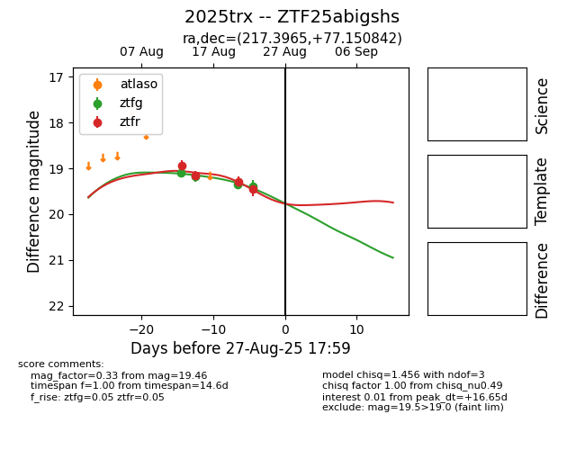

Target 2025trx at 2025-08-27 17:59, see:
FINK: fink-portal.org/ZTF25abigshs
Lasair: lasair-ztf.lsst.ac.uk/objects/ZTF25abigshs
ALeRCE: alerce.online/object/ZTF25abigshs
TNS: wis-tns.org/object/2025trx
YSE: ziggy.ucolick.org/yse/transient_detail/2025trx
alt names
ZTF25abigshs (ztf,fink)
2025trx (tns,yse)
coordinates:
equatorial (ra, dec) = (217.3965,+77.15084)
galactic (l, b) = (116.1403,+38.65371)
photometry
last ztfg=19.40, ztfr=19.46
4 ztfg, 4 ztfr detections
